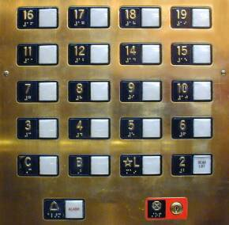

In what concerns the continuous evaluation solving exercises grade during the semester, you should submit until 23:59 of October 11th
(this exercise will still be available for submission after that deadline, but without couting towards your grade)
[to understand the context of this problem, you should read the class #01 exercise sheet]

Many cultures consider certain numbers "unlucky". For example, in several european countries the number 13 is seen as a symbol of bad luck, while in many asian countries the number 4 is avoided due to its similarity in pronunciation to the word for "death".In this problem, you will be given a list of integers and a specific unlucky number and you need to filter out all occurrences of the unlucky number.
Given a list of N integers and an unlucky number X, count how many integers are different from X and then output those numbers in their original order in the list.
The first line contains two integers N and X, where N is the number of integers in the list and X is the unlucky number.
The second line contains N space-separated integers ai, representing the list. It is guaranteed that at least one of the integers will not be unlucky.
The first line must contain a single integer: the number of integers in the list that are not equal to X.
The second line must contain these integers, separated by single spaces, in the same order they appeared in the input.
The following limits are guaranteed in all the test cases that will be given to your program:
| 1 ≤ N ≤ 100 | Size of initial list | |
| 1 ≤ X ≤ 109 | Unlucky number | |
| 1 ≤ ai ≤ 109 | Numbers in the list |
| Example Input 1 | Example Output 1 |
8 13 13 2 31 13 13 7 25 13 |
4 2 31 7 25 |
There are four numbers (2, 31, 7 and 25) that are not the unlucky 13.
| Example Input 2 | Example Output 2 |
5 4 42 4 4 4 4 |
1 42 |
In this example there is only one unlucky number, which is 42.